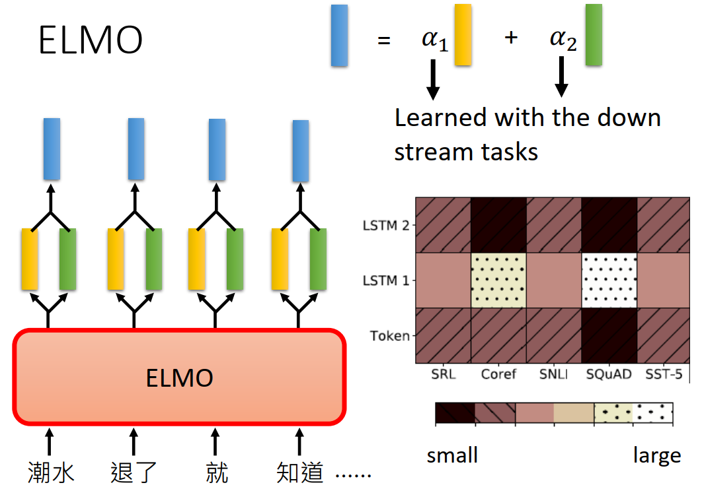

BERT英文全称是：Bidirectional Encoder Representations from Transformers，即双向Transformer的encoder。
BERT提出的时候刷新了11项NLP任务的记录，可以说开创了一个新的时代。
不熟悉word2vec的和Transformer的可以看我博客相关文章：
词向量对比
从word2vec到ELMo在到Bert发生了什么变化呢？这里引用【NLP】彻底搞懂BERT的评价：
word2vec——>ELMo：
结果：上下文无关的static向量变成上下文相关的dynamic向量，比如苹果在不同语境vector不同
操作：encoder操作转移到预训练产生词向量过程实现
ELMo——>BERT：
结果：训练出的word-level向量变成sentence-level的向量，下游具体NLP任务调用更方便，修正了ELMo模型的潜在问题
操作：使用句子级负采样获得句子表示/句对关系，Transformer模型代替LSTM提升表达和时间上的效率，masked LM解决“自己看到自己”的问题
下面会讲讲ELMo，然后在讲解BERT
ELMO
前面提到过，ELMO会将静态的词转变成上下文相关的动态词向量。
这有什么好处呢？比如体会一下下面几个bank的意思：
It is safest to deposit your money in the bank.
They stood on the river bank to fish.
The hospital has its own blood bank.
第一个是银行的意思，第二个则是河畔的意思，第三个则是库存的意思。虽然都是"bank"，但是和使用的上下文有关系，而word2vec学习出来的是静态的向量。
因此，ELMO进行了改进，通过RNN来训练语言模型，即给定上一个TOKEN，来预测下一个token。分别进行前向、后向的训练，将中间的hidden向量拼接起来就得到了词的vector。这是因为RNN输出某个词会考虑前面读过的句子，也就考虑了上下文，因此能得到动态的词向量。（注：这里后向的训练相当于原来句子逆向，比如正向是“潮水退了就知道” 逆向的输如则是“知道就退了潮水”）。

对于多层的RNN，每一层都有隐向量，ELMO的做法是”我全都要“。假设忘了有两层，则会输出两个隐向量（分别是下图黄色和绿色的），ELMO会对他们进行加权相加，具体的权重是通过具体任务学习出来的。

由上面可以看到，ELMO采用了前向和后向两个RNN分别的训练，这是为什么呢？
因为采用双向的RNN会导致”看见答案“的问题（或者说看见自己see itself），以上面的“潮水退了就知道”这个为例，正向的RNN在预测“退了”的时候，会考虑到前面“潮水”的信息，这两个词的信息都被放入了RNN的隐向量中。而如果考虑还有一个反向的RNN，在预测”退了“的时候，会有将要预测的”就“的信息被考虑了进来，这就相当于看到了答案。因此ELMO采用了前向和后向两个RNN分别训练，从而避免了这个问题。
BERT
BERT主要是预训练+fine tuning，通过在大量的语料库中得到了词的基本表示，然后在具体的任务中进行fine tuning。
BERT的结构如下图左边所示，其基本的单元是transformer的encoder的模块。

回想之前提到的ELMO，是使用两个单向的RNN来代替一个双向的RNN，从而使得不会有看到答案的问题。而GPT是用通过mask得分矩阵避免当前字看到之后所要预测的字，GPT只有正向的，缺失了反向的信息。而BERT呢？采用的是将预测的字用[MASK]字符代替，因此无论你是正向的还是反向的，你都不知道[MASK]这个字符原来的字是什么，只有结合[MASK]左右两边的词语信息来预测，这就达到了用双向模型训练的目的，这个细节会在后面讨论。而还有更新的XLnet模型结合了GPT和BERT的思想，用mask得分矩阵的方法来替代[MASK]这个字符，取得了更好的效果。
下面开始介绍BERT细节的东西。
预训练
之所以先讲预训练，而不是模型的输入是因为BERT的训练思想会体现在输入中。训练的部分也是BERT关键创新的部分。
在训练的语料库的选取方面，作者强调要选用document-level的而不是sentence-level的，从而具备抽象连续长序列特征的能力。
It is critical to use a document-level corpus rather than a shuffled sentence-level corpus such as the Billion Word Benchmark (Chelba et al., 2013) in order to extract long contiguous sequences.
Masked LM
前面提到过，为了防止"看见答案"的问题，BERT将预测的字来进行替代，具体的图如下:
随机选择15%的word，将预测的word用[MASK]字符替代，然后用线性的分类器去预测这个word，避免了”看见答案“的问题，因为无论正向反向都不知道这个word原来是什么，从而迫使模型结合上下文来进行推测，这样就达到了用双向模型训练的目的。
但是这也引入了一个问题，就是预训练和finetuning之间是不匹配的：因为在finetuning期间从未看到[MASK]token。为了解决这个问题，BERT并不总是用实际的[MASK]来替换被mask的词汇，而是：
- 80% of the time: Replace the word with the [MASK] token, e.g., my dog is hairy ! my dog is [MASK]
- 10% of the time: Replace the word with a random word, e.g., my dog is hairy ! my dog is apple
- 10% of the time: Keep the word unchanged, e.g., my dog is hairy ! my dog is hairy. The purpose of this is to bias the
representation towards the actual observed word.
即80%的实际用[MASK]标记替换单词，10%的时间用一个随机的单词替换该单词，还有10％的时间：保持单词不变。这样做的目的是将表示偏向于实际观察到的单词。
Next Sentence Prediction
许多重要的下游任务，如问答（QA）和自然语言推理（NLI）都是基于理解两个句子之间的关系，语言建模并没有获得这个关系。因此，为了解决这个问题，提出了Next Sentence prediction训练的方法，如下图所示：

即一开始是一个[CLS]的字符，用来做二分类的输出；两个句子用[SEP]字符进行隔开。在训练时句子A后面跟着的句子B有50%是真实跟在A后面的，也有50%是来自语料库随机的句子。
输入
BERT的输入如下：

这是三部分的叠加：
-
Token Embedding，第一个单词是CLS标志，可以用于之后的分类任务
-
Segment Embeddings用来区别两种句子，因为有Next Sentence Prediction的任务
-
Position Embeddings：加入位置信息，和Transformer用三角函数不同，这里的embedding是学习出来的
Fine Tuning
前面提到过，BERT在具体任务上会进行fine tuning调整，下面对几种常见的情况做介绍。
Single Sentence Classification Task
BERT做分类fine tuning比较简单，在[CLS]标识符的输出接个线性的分类器即可。如下图所示：

Single Sentence tagging tasks
还有一种如Slot filling的任务，需要对输入的句子的每个词输出其类别，这个也比较简单，在每个词输出的向量用线性分类器就行。
Sentence pair classification task
接下来的例子稍微复杂一点，给定前提（句子A）和假设（句子B），让你判断给定前提能否推出假设，输出ture/false/unknown。
其实就是三个类别的分类问题，也是在一开始的CLS上接个线性的分类器：
Question Answer task
给定文章和问题，要让你输出答案在文章中的开始位置和结束位置（假设答案一定出现在文章中）
具体的做法是将question和document的分别输入bert，然后对每个词都会有一个黄色的vector输出。让模型在学习两个vector（下面的红色和蓝色的），分别用来表示答案开始和结束的位置的向量。红色的和每个黄色的vector进行点层，放入softmax，得到概率最高的就是s，蓝色的同理得到e（若e < s则无解）。

Erine
https://zhuanlan.zhihu.com/p/59436589